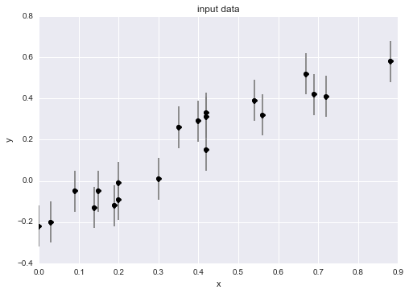
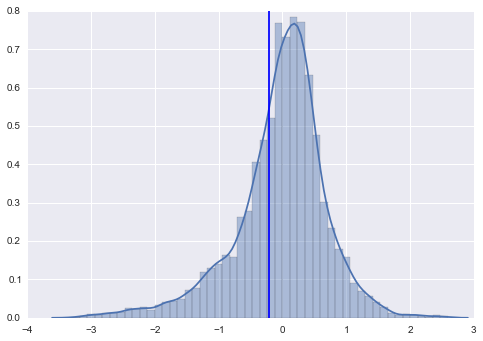
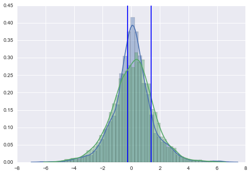
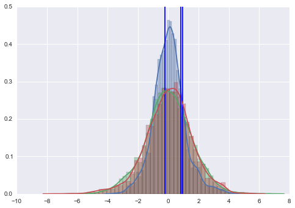
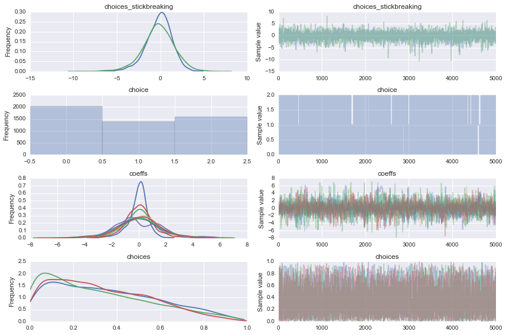

In [1]:
import numpy as np
data = np.array([[ 0.42, 0.72, 0. , 0.3 , 0.15,
0.09, 0.19, 0.35, 0.4 , 0.54,
0.42, 0.69, 0.2 , 0.88, 0.03,
0.67, 0.42, 0.56, 0.14, 0.2 ],
[ 0.33, 0.41, -0.22, 0.01, -0.05,
-0.05, -0.12, 0.26, 0.29, 0.39,
0.31, 0.42, -0.01, 0.58, -0.2 ,
0.52, 0.15, 0.32, -0.13, -0.09 ],
[ 0.1 , 0.1 , 0.1 , 0.1 , 0.1 ,
0.1 , 0.1 , 0.1 , 0.1 , 0.1 ,
0.1 , 0.1 , 0.1 , 0.1 , 0.1 ,
0.1 , 0.1 , 0.1 , 0.1 , 0.1 ]])
x, y, sigma_y = data
In [2]:
%matplotlib inline
import matplotlib.pyplot as plt
import seaborn as sns; sns.set() # set default plot styles
x, y, sigma_y = data
fig, ax = plt.subplots()
ax.errorbar(x, y, sigma_y, fmt='ok', ecolor='gray')
ax.set(xlabel='x', ylabel='y', title='input data');

In [3]:
def polynomial_fit(theta, x):
"""Polynomial model of degree (len(theta) - 1)"""
return sum(t * x ** n for (n, t) in enumerate(theta))
from scipy import stats
def logL(theta, model=polynomial_fit, data=data):
"""Gaussian log-likelihood of the model at theta"""
x, y, sigma_y = data
y_fit = model(theta, x)
return sum(stats.norm.logpdf(*args)
for args in zip(y, y_fit, sigma_y))
from scipy import optimize
def best_theta(degree, model=polynomial_fit, data=data):
theta_0 = (degree + 1) * [0]
neg_logL = lambda theta: -logL(theta, model, data)
return optimize.fmin_bfgs(neg_logL, theta_0, disp=False)
theta1 = best_theta(1)
theta2 = best_theta(2)
In [6]:
import numpy as np
degrees = [1, 2, 3]
import theano
import theano.tensor as T
def polynomial_theano(coefficients, x):
# Taken from http://deeplearning.net/software/theano/library/scan.html#iterating-over-the-first-dimension-of-a-tensor-calculating-a-polynomial
# Generate the components of the polynomial
components, updates = theano.scan(fn=lambda coefficient, power, free_variable: coefficient * (free_variable ** power),
outputs_info=None,
sequences=[coefficients, theano.tensor.arange(10)],
non_sequences=x)
# Sum them up
polynomial = components.sum(axis=0)
return polynomial
# best_theta() finds the best set of parameters for a given model
thetas = [best_theta(d) for d in degrees]
import pymc3 as pm
from pymc3 import Model, Dirichlet, Categorical, DensityDist, Normal
with Model() as bfactor:
choices = Dirichlet('choices', np.ones(3), shape=3)
choice = Categorical('choice', p=choices, testval=2)
# This will create too many RVs, but we simply ignore the ones we don't need
coeffs = Normal('coeffs', mu=0, sd=1, shape=(3, 3))
# Slice the appropriate number of coefficients
likelihood = Normal('logp', mu=polynomial_theano(coeffs[choice, :(choice+1)], x), sd=1, observed=y)
step1 = pm.step_methods.ElemwiseCategoricalStep(var=choice, values=[0, 1, 2])
step2 = pm.Slice(vars=[choices, coeffs])
trace = pm.sample(5000, [step1, step2])
[-----------------100%-----------------] 5000 of 5000 complete in 29.8 sec
Plot coefficients¶
In [28]:
for i, theta in enumerate(thetas):
plt.figure()
for j, t in enumerate((trace['coeffs'][:, i, :(i+1)]).T):
sns.distplot(t)
plt.axvline(theta[j])



In [29]:
pm.traceplot(trace);
